Google Drive

Crear una cuenta de Google
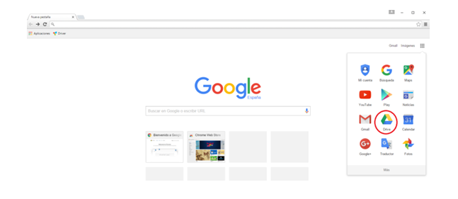
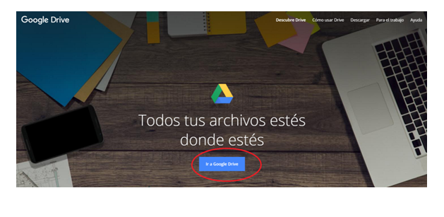
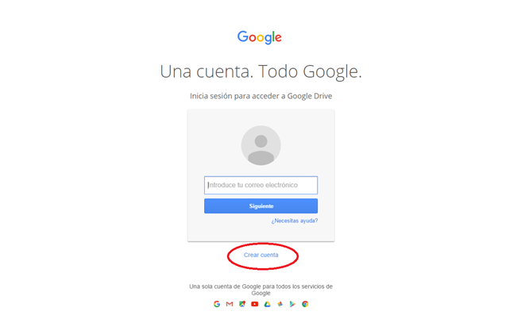
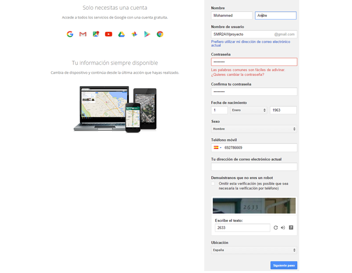
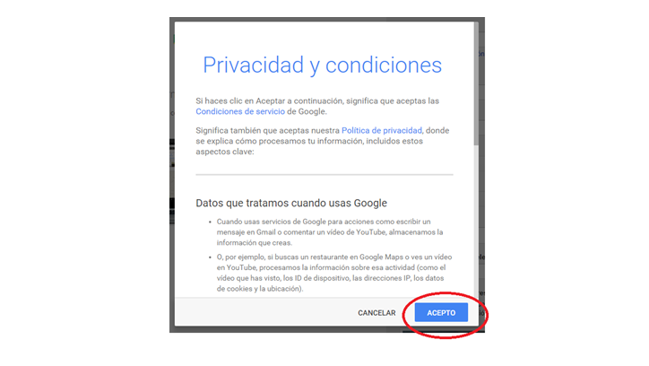
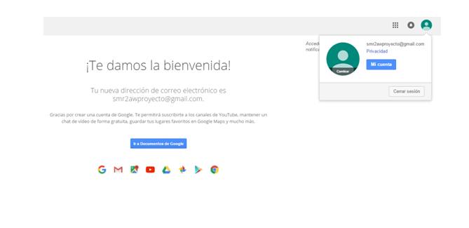
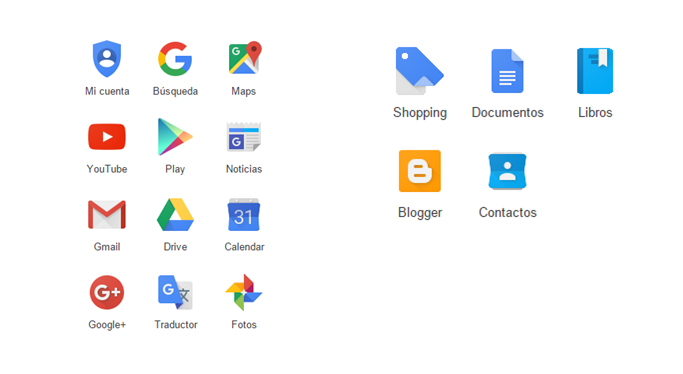
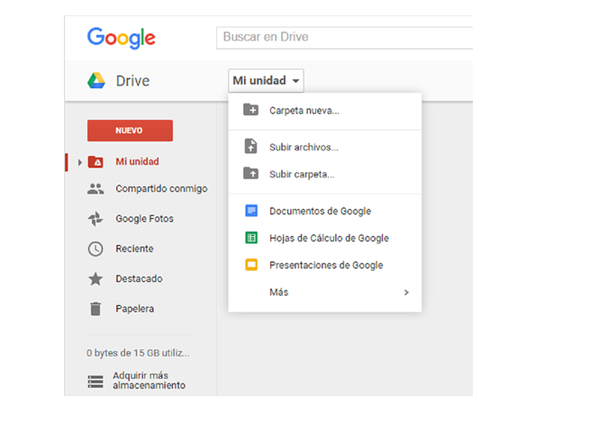
Tutorial de cómo utilizarlo en vídeo
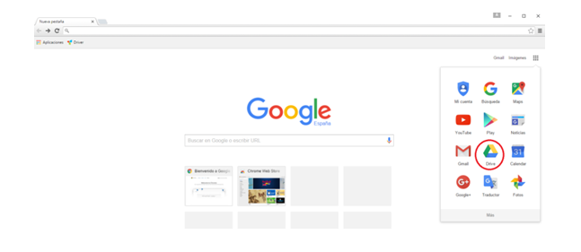
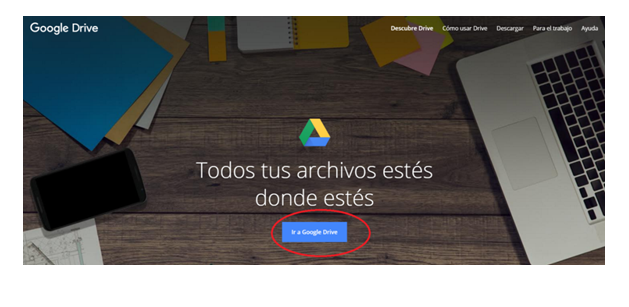
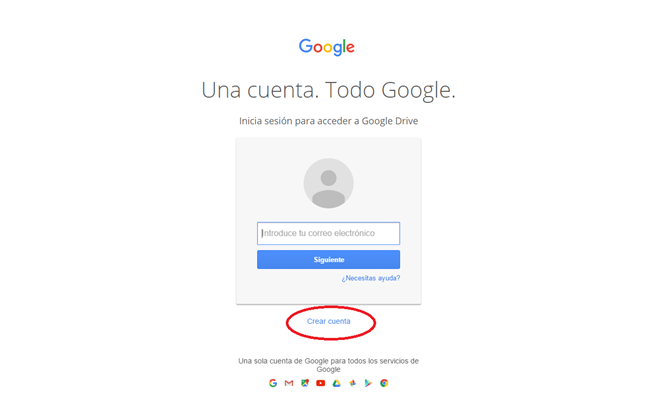
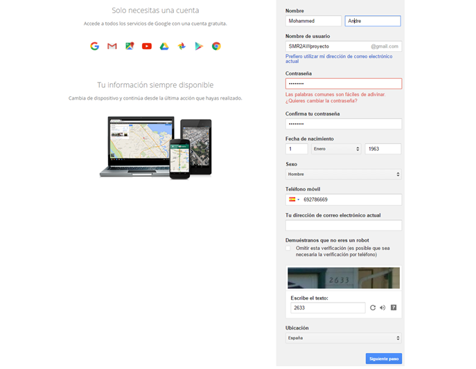
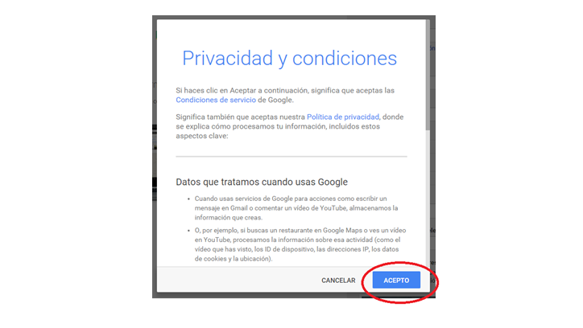
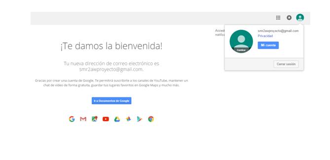
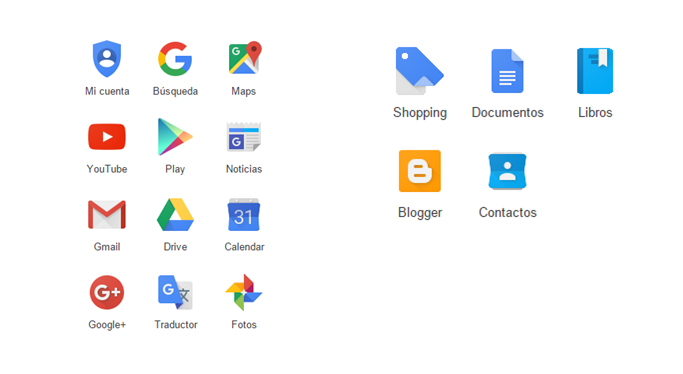
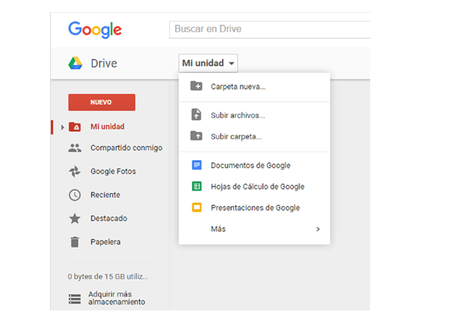
- Crear: Este botón te permite acceder a un menú desplegable para hacer nuevos documentos, nuevas hojas de cálculo, presentaciones y carpetas.
- Subir archivo o carpeta: Google drive permite subir más de 30 tipos de archivos para almacenamiento online, al hacer clic aparecerá un menú desplegable para elegir si quieres subir un solo archivo o una carpeta de tu equipo.
- Mi unidad: Aquí tendrás una visión general de los archivos que hayas creado y de los archivos que hayas subido a la aplicación.
- Compartido conmigo: Aquí verás los archivos que otros miembros de Google Drive han compartido contigo.
- Destacados: En esta sección verás los archivos o carpetas que ha marcado como los más importantes (favoritos) con la "estrella".
- Reciente: Aquí encontraras todo lo que hayas abierto o editado recientemente desde Google drive.
- La papelera, en caso de borrar accidentalmente un archivo, podamos recuperarlo de manera sencilla.
- Nueva carpeta: Desde esta opción podrás crear rápidamente una carpeta para organizar mejor tus archivos.
Tutorial de cómo utilizarlo en vídeo